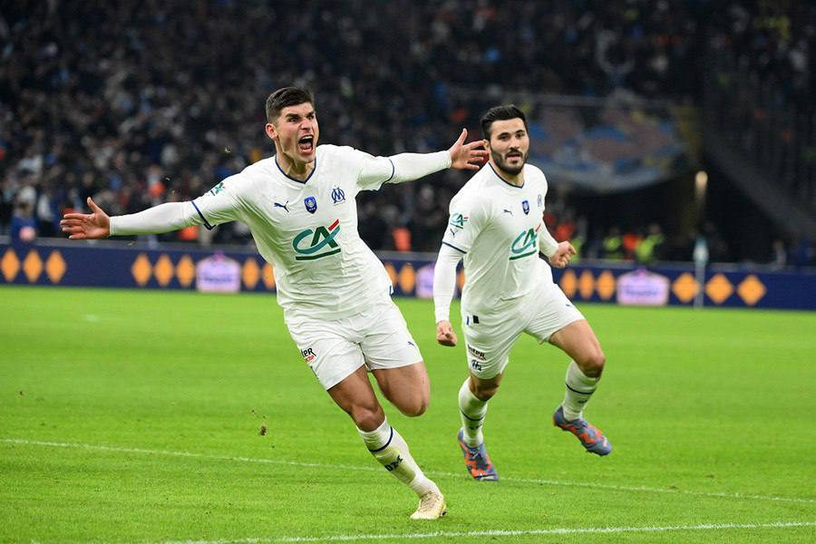
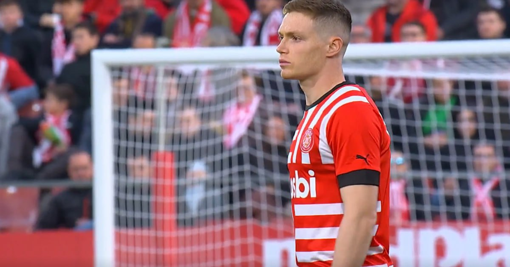
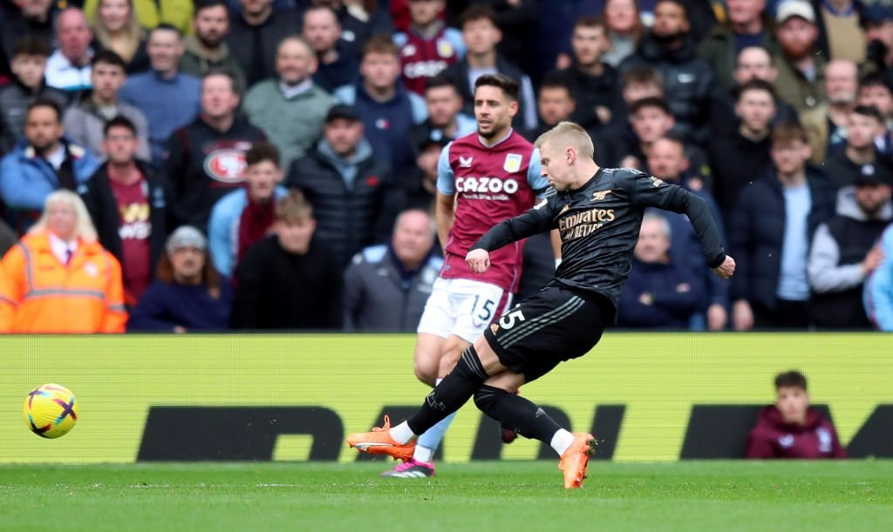
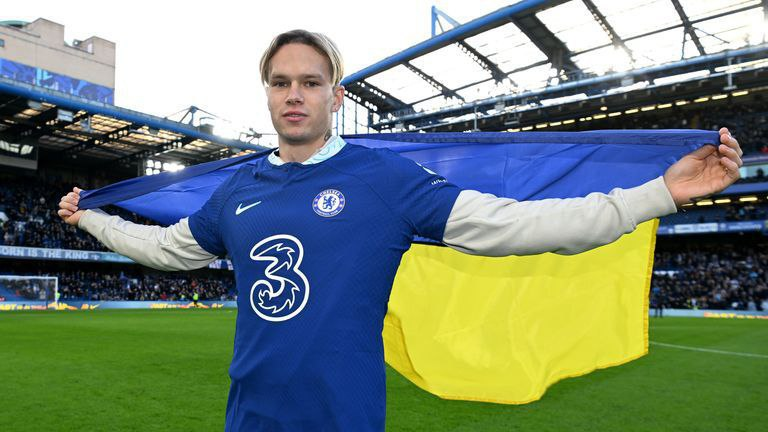
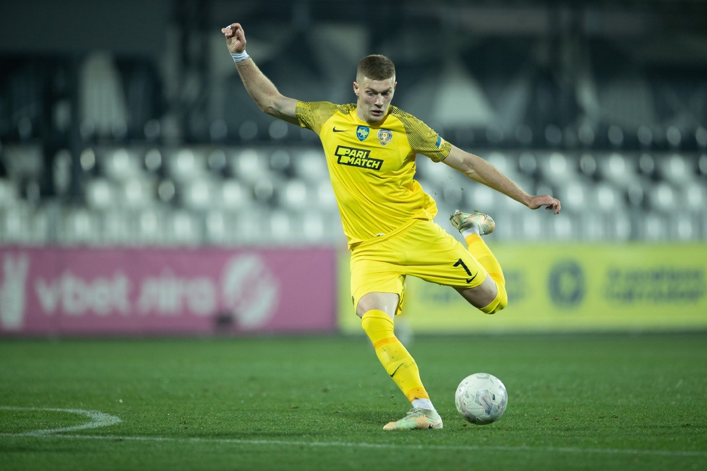

Півзахисник «Марселя» Руслан Маліновський отримав оцінку 7.5 за матч 1/8 фіналу Кубка Франції проти «ПСЖ» (2:1). Вищу оцінку отримали Дженгіз Юндер (7.8) та Валентен Ронж'є (7.6). 7.5 також отримав Алексіс Санчес. Маліновський забив вирішальний гол у цій грі.
Віктор Циганков, який не так давно перейшой у новий клуб "Жирона" з українського клубу "Динамо" вже дебютував у новому складі та навіть зміг проявити себе у новому клубі забитим м'ячем.
У недавньому матчи Олександр Зінчекенко поклав м'яча в сітку "Астон Вілли" Зінченку знадобилося 92 матчі щоб відзначитись першим голом в АПЛ.
Нарешті це сталося, МИхайло Мудрик перейшов до "Лондонського Челсі" було багато дискусій куди же потрапить Михайло до "Арсеналу" або "Челсі". Лондонський клуб "Челсі" пропонував "Донецькому Шахтеру" велику суму за Михайла понад 100млн. фунтив від якої Шахтер не міг не відмовитися. Сам Мудрик казав не раз, що більше хотів би грати у "Арсеналі". Сподіваємося Михайло покаже світові, що таке футбол.
Офіційний телеграм-канал «Дніпра-1» зробив репост новини, що взимку «Торіно» не захотів платити 11-12 млн євро за Довбика. Представник Серії А начебто розглядав 25-річного футболіста як підсилення у лінію атаки, однак не захотів платити 11-12 мільйонів євро.
